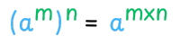

Pangkat Perpangkatan
Aturan pangkat perpangkatan digunakan untuk menyederhanakan ekspresi berbentuk \(\left(a^m\right)^n\). Dua pangkat tersebut dapat dikali untuk membentuk pangkat tunggal.

Contoh:
- \(\left(2^2\right)^3 = 2^{2\times 3} = 2^6\)
- \(\left(x^3\right)^5 = x^{3\times 5} = x^{15}\)
Latihan Soal
- Ekspresi \(\left(3^2\right)^4\) dapat disederhanakan menjadi ....
- \(3^2\)
- \(3^4\)
- \(3^6\)
- \(3^8\)
- \(3^{16}\)
\(\left(3^2\right)^4 = 3^{2 \times 4} = 3^8\) (D) - Ekspresi \(\left(a^{2x}\right)^5\) dapat disederhanakan menjadi ....
- \(a^{2x}\)
- \(a^5\)
- \(a^{10x}\)
- \(a^{2x+5}\)
- \(a^{\left(2x\right)^5}\)
\(\left(a^{2x}\right)^5 = a^{2x \times 5} = a^{10x}\) (C)